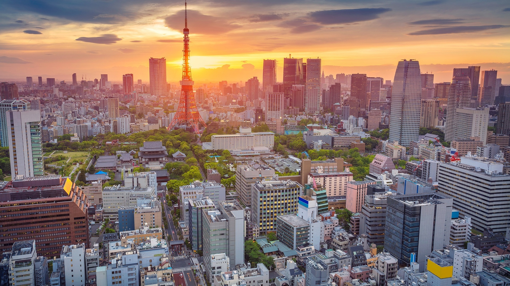

Flights and transportation
Flights and transportation Activities and tours
Activities and tours All inclusive
All inclusiveTokyo
Tōkyō (東京) is the capital of Japan. At over 13 million people in the official metropolitan area alone, Tokyo is the core of the most populated urban area in the world, Tokyo Metropolis (which has a population of over 37 million people). This huge, wealthy and fascinating metropolis brings high-tech visions of the future side by side with glimpses of old Japan, and has something for everyone.
Tokyo is vast: it's best thought of not as a single city, but a constellation of cities that have grown together. Tokyo's districts vary wildly by character, from the electronic blare of Akihabara to the Imperial gardens and shrines of Chiyoda, from the hyperactive youth culture Mecca of Shibuya to the pottery shops and temple markets of Asakusa. If you don't like what you see, hop on the train and head to the next station, and you will find something entirely different.
The sheer size and frenetic pace of Tokyo can intimidate the first-time visitor. Much of the city is a jungle of concrete and wires, with a mass of neon and blaring loudspeakers. At rush hour, crowds jostle in packed trains and masses of humanity sweep through enormous and bewilderingly complex stations. Don't get too hung up on ticking tourist sights off your list: for most visitors, the biggest part of the Tokyo experience is just wandering around at random and absorbing the vibe, poking your head into shops selling weird and wonderful things, sampling restaurants where you can't recognize a single thing on the menu (or on your plate), and finding unexpected oases of calm in the tranquil grounds of a neighbourhood Shinto shrine. It's all perfectly safe, and the locals will go to sometimes extraordinary lengths to help you if you just ask.